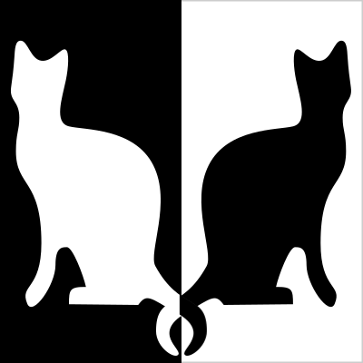

Speed Index
Aggregate function on quickness of above-the-fold visual completion:

- 4,462
 5,902
5,902

Measurement of visual progress in Speed Index
- Frame-by-frame VC progress is computed from pixel-histogram comparisons
- Pixel-wise similarity (mean histogram difference a.k.a. MHD) doesn’t capture visual perception!
- Perception of Shape / Color / Object similarity
Pixel-wise similarity doesn’t capture shape similarity
Black/White = 50/50 MHD (Mean Histogram Difference) = 0


- 
Pixel-wise similarity doesn’t capture color similarity

Speed Index
Aggregate function on quickness of above-the-fold visual completion:
- 4,462
- 5,902
Perceptual Speed Index
Frame-by-frame VC progress computation using SSIM
Without Jitter

PSI v. SI
- SI and PSI: linearly correlated
- Visual jitter / layout thrashing? PSI > SI
- PSI appears higher when visual jitter exists (Pop-up ads / large lay-out changes / etc.)
- SSIM based visual progress measurements match human perception more closely than MHD
- SSIM / MHD swap doesn’t affect websites without visual jitter